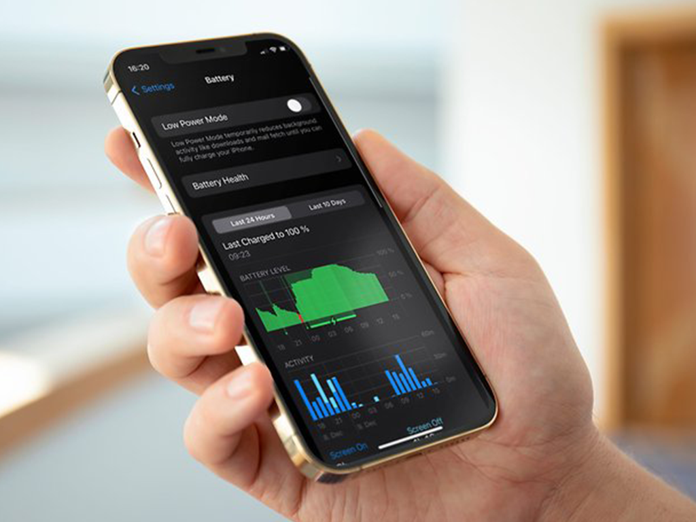

Tips Menjaga Battery Health Pada Apple Device Agar Tetap Optimal
Siapa sih yang nggak panik kalau baterai habis di saat penting? Biar perangkat Apple-mu tetap awet dan baterainya tahan lama, yuk cek tips-tips keren ini !
Update ke iOS dan macOS Terbaru
Selalu pastikan perangkatmu menjalankan sistem operasi terbaru. Update iOS dan macOS sering membawa perbaikan yang bisa bikin baterai lebih awet. Untuk iPhone, iPad, atau iPod, buka Settings > General > Software Update, sedangkan di MacBook, kamu bisa cek update di System Preferences > Software Update.
Atur Kecerahan Layar
Layar terang memang enak dilihat, tapi boros baterai! Redupkan layar lewat Control Center di iPhone atau iPad, dan di MacBook, atur di System Preferences > Displays. Aktifkan juga Auto-Brightness di semua perangkatmu biar layar otomatis menyesuaikan pencahayaan sekitar.
Aktifkan Low Power Mode di iPhone dan MacBook
-
iPhone & iPad:
Ketika baterai mulai menipis, aktifkan Low Power Mode di Settings > Battery. Mode ini mematikan beberapa fitur yang nggak penting untuk memperpanjang usia baterai. -
MacBook:
Di MacBook, fitur ini disebut Battery Saver dan bisa diaktifkan di System Preferences > Battery > Power Adapter.
Cek Penggunaan Baterai per Aplikasi
Lihat aplikasi mana yang bikin baterai cepat habis. Di iPhone/iPad, cek di Settings > Battery, sementara di MacBook cek di System Preferences > Battery > Usage History. Kalau ada aplikasi yang terus aktif di background, matikan Background App Refresh di iPhone atau tutup aplikasi yang nggak dipakai di MacBook.
Atur Notifikasi dan Layanan Lokasi
Notifikasi dan fitur lokasi bisa bikin baterai cepat habis. Kurangi notifikasi yang nggak penting di Settings > Notifications dan matikan Location Services di Settings > Privacy > Location Services. Di MacBook, kamu bisa mengatur aplikasi untuk tidak menggunakan lokasi di System Preferences > Security & Privacy > Location Services.
Perlakukan Perangkatmu dengan Baik
Jaga suhu perangkat agar tidak terlalu panas atau dingin. Suhu ideal untuk perangkat Apple adalah 16°C hingga 22°C. Terlalu panas atau terlalu dingin bisa merusak baterai secara permanen.
Lepas Casing saat Mengisi Daya
Kalau perangkatmu terasa panas saat di-charge, coba lepas casingnya dulu. Panas berlebih bisa mempengaruhi kesehatan baterai dalam jangka panjang.
Manfaatkan Fitur Pengisian Daya Optimal
Apple punya fitur canggih yang memperpanjang umur baterai dengan Optimized Battery Charging di iPhone, Apple Watch, dan MacBook. Fitur ini belajar dari kebiasaanmu dan hanya mengisi daya penuh sebelum kamu benar-benar butuh perangkatmu.
Atur Penggunaan Energi di MacBook
Di MacBook, kamu bisa mengatur penghematan energi dengan membuka System Preferences > Battery > Power Adapter. Di sini, kamu bisa memilih pengaturan untuk mematikan layar lebih cepat dan menurunkan kinerja CPU saat baterai lemah, yang tentunya bakal memperpanjang umur baterai.
Simpan dengan Daya Setengah
Kalau kamu berencana nggak pakai perangkat dalam waktu lama, simpan dengan daya sekitar 50%. Jangan simpan dengan baterai kosong atau penuh karena bisa merusak kesehatan baterai. Simpan di tempat sejuk dan bebas kelembapan.
Kalau battery health kamu sudah terlanjur drop dan terasa cepat habis, jangan khawatir. Kamu bisa langsung bawa ke
ACS untuk perbaikan baterai yang aman dan bergaransi .